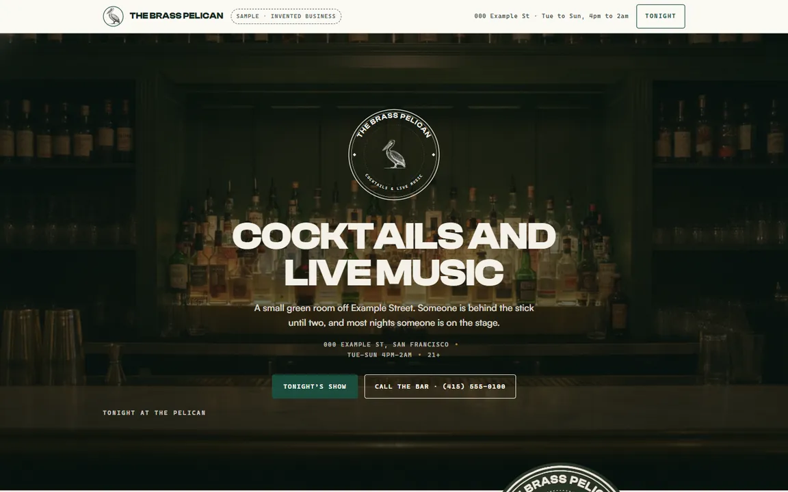
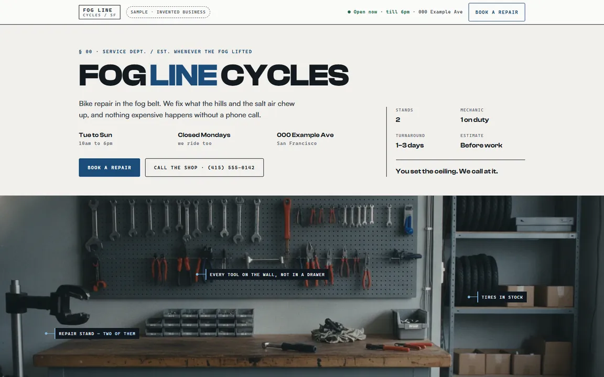
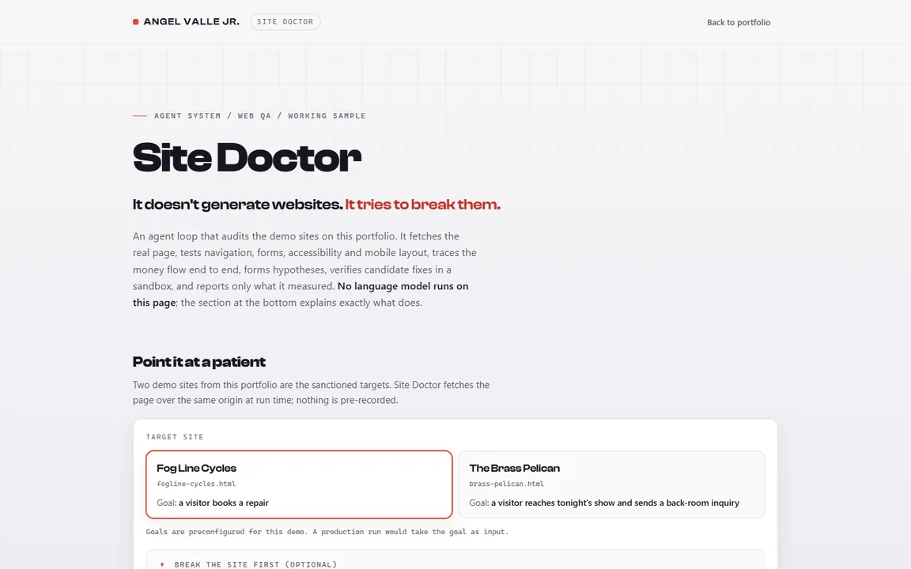
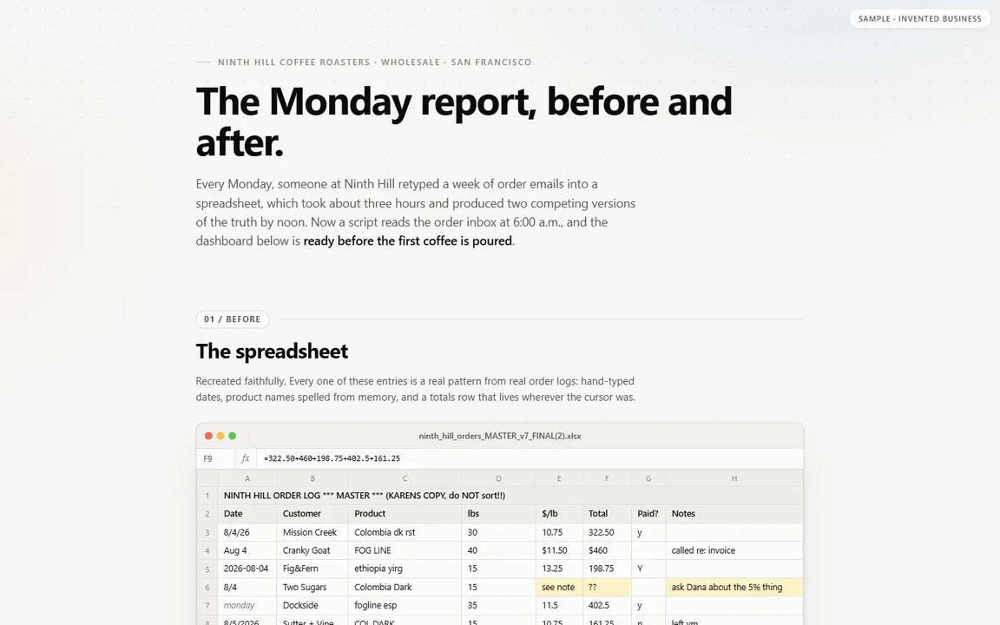
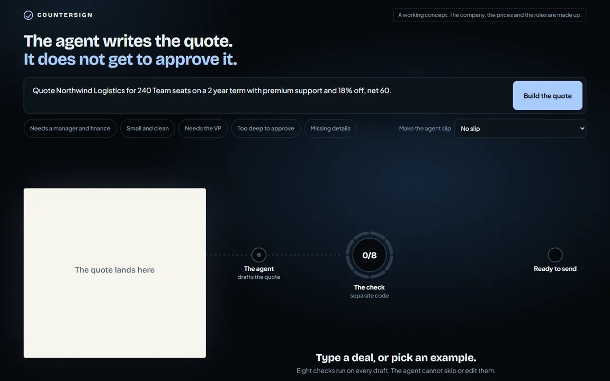

I’m a developer in San Francisco. Nothing here is a screenshot: every build below is live, and so is this page. Drag your cursor through the ink.
Five builds, all live.
Keep scrolling. Each frame holds the real page, running.




business Booking sites, dashboards and small tools that do one job well. For hiring
managers Agent systems with the brakes built in, and the code in the open.
Also running.
- Night Shift SupplyA night workwear label; its home page is a punch clock.Open
- KestrelDocument-grounded answers, live in your browser.Open
- LongshoreA feature, then a newsletter that survives Outlook.Open
- After BedtimeA product design case study, filmed.Watch
- ProofloopAgents inside hard limits.Code
- The labExperiments and the ship log.Lab
- GamesPublished as lowpolysaint; two play in the browser.Play